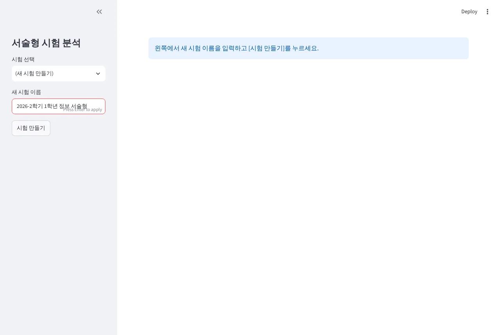
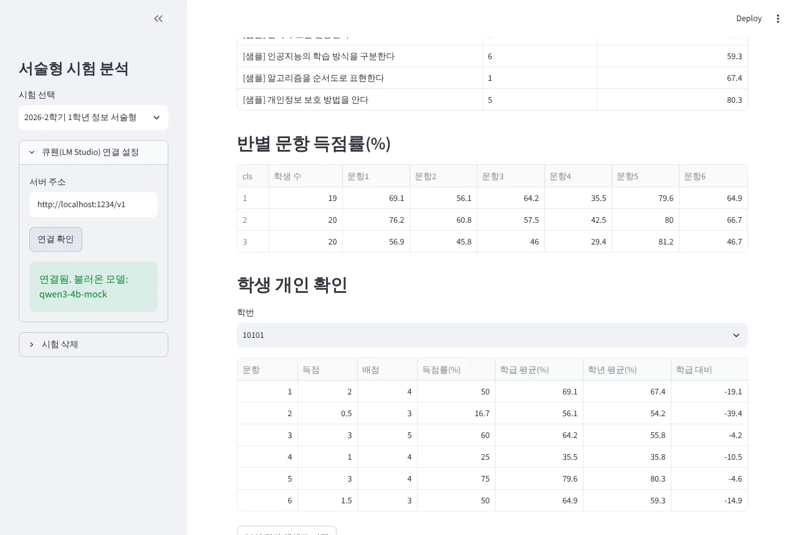
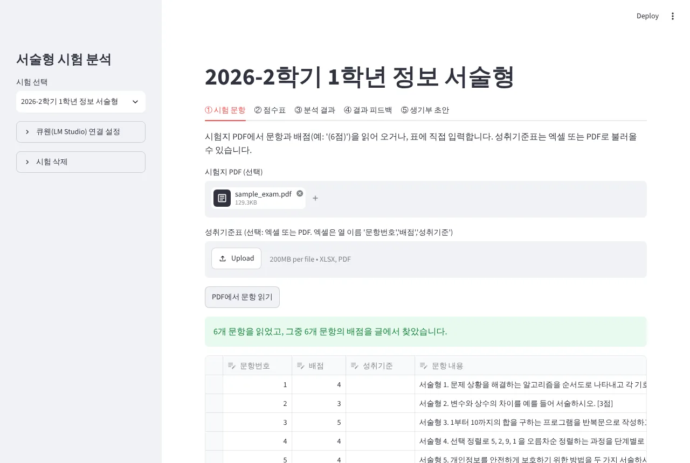
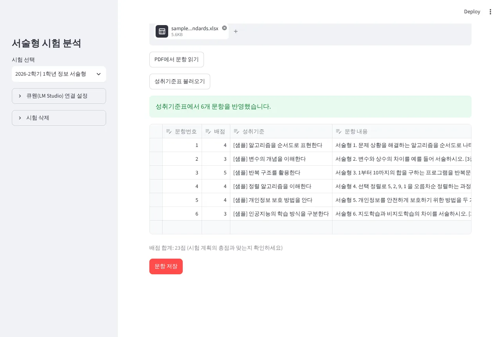
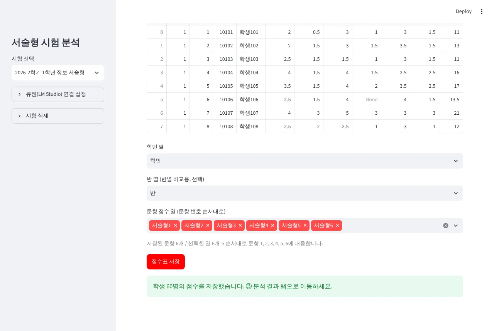
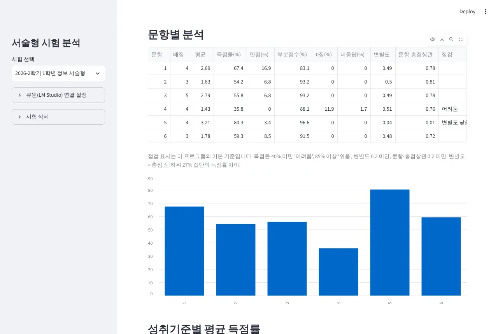
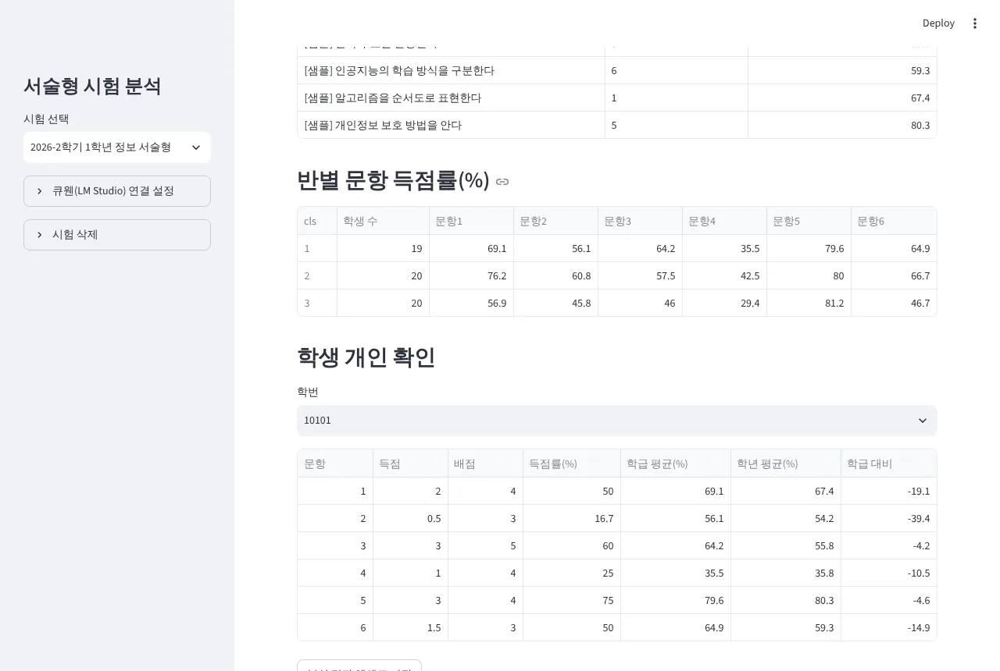
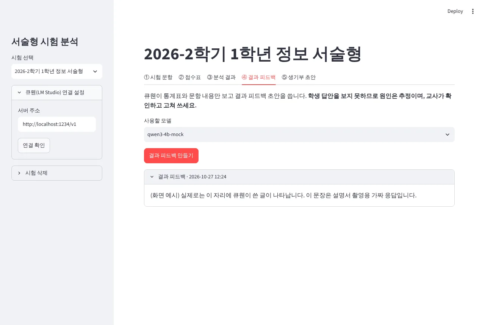
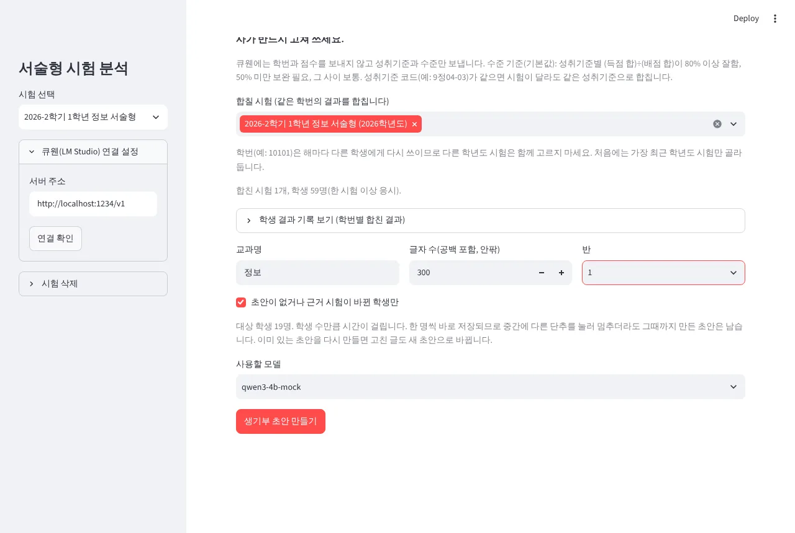
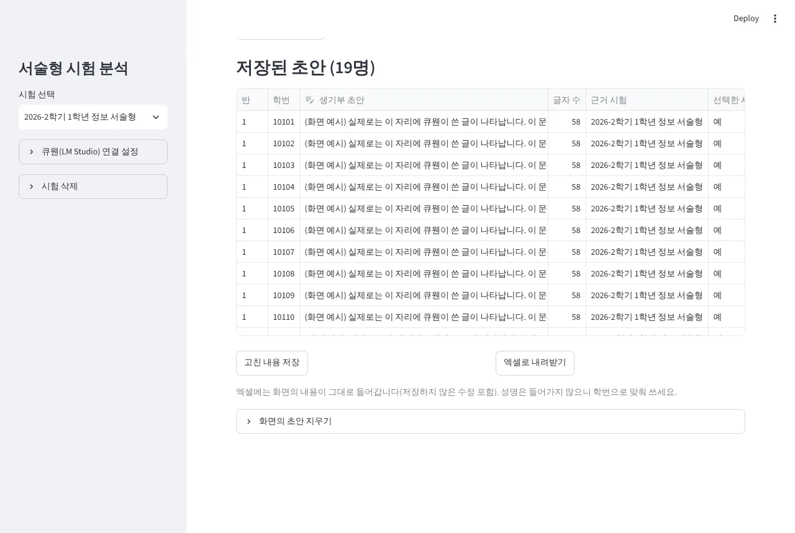

LM Studio · 큐웬(Qwen) · 파이썬 · 데이터베이스(SQLite) | 활용 예시: 서술형 시험 분석 프로그램
아무것도 설치되지 않은 윈도우 노트북 기준 | 작성 기준일 2026-10-27
구분: 개념설치작동 실습활용 예시관리
설치 전에 각 프로그램이 하는 일을 먼저 알아 두면, 문제가 생겼을 때 어디를 봐야 할지 알 수 있습니다.
| 설치할 것 | 하는 일 |
|---|---|
| LM Studio | AI 모델을 내려받고, 대화하고, 다른 프로그램이 쓸 수 있게 열어 주는 프로그램 |
| 큐웬(Qwen3 4B) | 글을 읽고 쓰는 AI 모델 파일(약 2.5GB) |
| 파이썬(Python) | 프로그램을 실행하는 언어·엔진 |
| SQLite (파이썬에 들어 있음) | 자료를 표 형태로 오래 저장하는 데이터베이스 |
| (선택) DB Browser for SQLite | 데이터베이스 파일 안을 눈으로 보는 프로그램 |
LLM(Large Language Model, 대규모 언어 모델)은 많은 글을 학습해 사람처럼 글을 읽고 쓰는 AI입니다. 챗GPT, 제미나이, 클로드가 모두 LLM입니다.
지역 LLM(로컬 LLM)은 이런 모델을 회사 서버가 아니라 내 컴퓨터 안에서 실행하는 것을 말합니다. 모델 파일을 내려받아 두면 인터넷이 끊겨도 동작합니다.
| 구분 | 클라우드 AI (챗GPT·제미나이·클로드 등) | 지역 LLM (LM Studio + 큐웬) |
|---|---|---|
| 어디서 돌아가나 | 회사의 대형 서버 | 내 노트북의 CPU·메모리 |
| 내가 입력한 글 | 인터넷으로 회사 서버에 전송됨 | 노트북 밖으로 나가지 않음 |
| 인터넷 | 항상 필요 | 모델을 내려받을 때만 필요 |
| 비용 | 무료 한도 또는 유료 구독 | 무료 (전기·노트북 성능만 사용) |
| 글의 품질 | 매우 높음 (모델이 매우 큼) | 모델 크기에 따라 다름. 4B 모델은 짧고 단순한 글에 적합 |
| 속도 | 빠름 | GPU 없는 노트북은 느림 (글 한 편에 수십 초~수 분일 수 있음) |
| 최신 정보·검색 | 검색 기능이 있는 경우가 많음 | 없음. 학습한 시점까지의 지식만 있음 |
LM Studio에서 모델을 고를 때 아래 용어가 계속 나옵니다. 모델 이름 Qwen3-4B-GGUF Q4_K_M을 읽을 수 있으면 충분합니다.
학습이 끝난 AI 본체. 파일 하나(또는 몇 개)로 되어 있습니다. 큐웬(Qwen)은 알리바바의 Qwen 팀이 공개한 모델로, Qwen3는 2025년 4월에 Apache 2.0 라이선스(상업적 이용도 허용되는 공개 라이선스)로 나왔습니다.
모델이 학습한 숫자(가중치)의 개수. 클수록 대체로 똑똑하지만 더 크고 느립니다. Qwen3는 0.6B·1.7B·4B·8B·14B·32B 등이 있습니다. CPU 노트북에는 4B가 알맞습니다.
숫자를 더 적은 자리로 줄여 파일을 작게 만드는 방법. Q 뒤 숫자가 작을수록 작고 빠르지만 품질이 조금 떨어집니다. Q4_K_M은 크기와 품질의 균형이 좋아 널리 쓰이는 선택입니다.
CPU에서도 돌리기 좋게 만든 모델 파일 형식. LM Studio는 윈도우에서 주로 이 형식을 씁니다. 이름에 GGUF가 있는 것을 고르면 됩니다.
AI가 글을 처리하는 단위. 속도는 초당 토큰 수(tok/s)로 표시합니다. 같은 노트북이라도 긴 글일수록 오래 걸립니다.
AI가 한 번에 기억하며 읽을 수 있는 글의 길이(질문+답 합계). 길게 늘리면 메모리를 더 씁니다. 긴 문서를 통째로 넣으면 앞부분을 잊을 수 있습니다.
Qwen3는 답하기 전에 속으로 생각하는 과정(<think>)을 쓸 수 있습니다. 정확해질 수 있지만 훨씬 오래 걸립니다. 질문 끝에 /no_think를 붙이면 생각을 건너뛰도록 요청할 수 있습니다.
답의 다양성 조절값. 낮으면 같은 질문에 비슷한 답, 높으면 매번 다른 답. 업무 문서는 0.2~0.5 정도가 무난합니다.
AI가 사실이 아닌 내용을 그럴듯하게 쓰는 현상. 작은 모델일수록 잦습니다. 사실·숫자·이름은 반드시 확인하세요.
모델은 실행되는 동안 RAM(메모리)에 올라갑니다. 그래픽카드(GPU)가 있으면 빨라지지만 없어도 CPU로 돌아갑니다. 이 연수는 GPU 없는 노트북을 기준으로 합니다.
| 노트북 | 권장 시작 모델 |
|---|---|
| RAM 16GB, GPU 없음 (이 연수 기준) | Qwen3 4B, Q4_K_M (약 2.5GB). 여유가 있으면 8B Q4_K_M(약 5GB)도 시험해 볼 수 있습니다. |
| RAM 8GB | 더 작은 모델(예: 1.7B)이 필요할 수 있습니다. 이 연수에서는 확인하지 못했습니다. 확인 필요 |
| GPU(그래픽 메모리 4GB 이상) 있음 | LM Studio가 GPU를 쓰면 빨라집니다. LM Studio 공식 문서는 GPU 메모리 4GB 이상을 권장합니다. |
내려받아 쓸 수 있는(가중치가 공개된) 모델은 여러 회사가 냅니다. 같은 회사의 모델을 계열이라 부르고, 계열 안에서 버전과 크기(B)가 나뉩니다. 아래는 LM Studio에서 많이 쓰는 계열 가운데 노트북에서 돌릴 수 있는 크기만 2026년 10월 기준으로 정리한 것입니다.
| 계열 (만든 곳) | 노트북에 맞는 크기 | 한국어 | 라이선스 | 특징 |
|---|---|---|---|---|
| 큐웬 Qwen 알리바바 (중국) | Qwen3: 1.7B·4B·8B Qwen3.5 (2026.3): 2B·4B·9B | 무난 | Apache 2.0 (상업 이용 가능) | 크기가 다양하고 생각 모드를 켜고 끌 수 있음. 이 연수의 기준 모델(Qwen3 4B) |
| 젬마 Gemma 구글 (미국) | Gemma 3: 1B·4B·12B Gemma 4 (2026.4): E2B·E4B | 무난 | Gemma 3: 구글 전용 약관 Gemma 4: Apache 2.0 | 사진(이미지)도 함께 읽는 크기가 있음. 같은 급의 큐웬보다 파일·메모리가 큰 편 |
| 라마 Llama 메타 (미국) | Llama 3.2: 1B·3B Llama 3.1: 8B | 약한 편 (공식 지원 언어에 없음) | 메타 전용 라이선스 (조건부 무료) | 오래 쓰여 자료와 변형 모델이 많음. 최신 Llama 4는 노트북에 너무 큼 |
| 파이 Phi 마이크로소프트 (미국) | Phi-4-mini: 3.8B Phi-4: 14B | 약한 편 (영어 중심) | MIT (상업 이용 가능) | 크기에 비해 수학·논리 문제에 강한 편 |
| 엑사원 EXAONE LG AI연구원 (한국) | EXAONE 3.5: 2.4B·7.8B EXAONE 4.0: 1.2B | 강함 (한국어 중심 학습) | LG 전용 라이선스 연구·교육 목적만 (비상업) | 한국어 문장과 국내 맥락에 강점. 업무에 쓰기 전 약관 확인 필요 |
| 하이퍼클로바X SEED 네이버 (한국) | 0.5B·1.5B·3B (추론용 Think 14B) | 강함 | 네이버 전용 라이선스 (상업 이용 허용, 조건 있음) | 한국어·국내 정보에 강점. LM Studio용 GGUF 파일은 네이버가 아닌 사람이 변환한 것이 많음 확인 필요 |
| gpt-oss OpenAI (미국) | 20B (파일 약 12~13GB) | 무난 | Apache 2.0 (상업 이용 가능) | 챗GPT 회사가 공개한 모델. 생각(추론)이 강하지만 RAM 16GB에서는 빠듯함(24GB 이상 권장) |
gemma, exaone)으로 검색하면 지금 받을 수 있는 것이 나옵니다.
| 이럴 때 | 이렇게 해 보세요 |
|---|---|
| 처음 시작한다 | 이 연수의 Qwen3 4B (Q4_K_M) 그대로. 활용 예시 프로그램도 이 모델에 맞춰 만들었습니다. |
| 한국어 문장이 어색하다 | EXAONE이나 하이퍼클로바X SEED를 받아 13장의 같은 질문으로 비교해 보세요. |
| 사진·스캔한 자료를 읽히고 싶다 | 이미지를 읽는 Gemma(4B 이상 또는 E2B·E4B)를 받아 LM Studio 채팅에 사진을 첨부해 보세요. |
| 노트북 RAM이 8GB다 | 1~2B 크기(예: Qwen3 1.7B, Qwen3.5 2B, Gemma 4 E2B)부터 시험해 보세요. |
| RAM 32GB 이상이거나 GPU가 있다 | 8~14B 크기나 gpt-oss 20B를 시험해 보세요. 글이 나아지는 대신 느려질 수 있습니다. |
/no_think는 큐웬 전용이라 다른 계열에서는 듣지 않을 수 있습니다.
LM Studio는 지역 LLM을 쉽게 쓰도록 만든 무료 데스크톱 프로그램입니다. 명령어 없이 화면에서 클릭으로 모델을 받고 대화할 수 있습니다.
http://localhost:1234사람은 채팅 창으로 AI와 대화하지만, 프로그램은 API(약속된 주소와 형식)로 AI와 대화합니다. LM Studio의 로컬 서버는 OpenAI(챗GPT 회사)의 API와 같은 형식을 따릅니다. 그래서 챗GPT용으로 만든 프로그램도 주소만 바꾸면 지역 LLM을 쓸 수 있습니다.
| 주소 | 하는 일 |
|---|---|
http://localhost:1234/v1/models | 지금 쓸 수 있는 모델 목록을 알려 줌 (브라우저로 열어 볼 수 있음, 14장) |
http://localhost:1234/v1/chat/completions | 대화 내용을 보내면 AI의 답을 돌려줌 (파이썬으로 써 봄, 15장) |
파이썬(Python)은 배우기 쉬운 프로그래밍 언어이자, 파이썬으로 쓴 프로그램을 실행하는 엔진입니다. 활용 예시 프로그램도 파이썬으로 만들었습니다.
남이 미리 만들어 둔 기능 묶음. 필요한 것만 골라 설치합니다. 앱의 "추가 기능"과 비슷합니다.
라이브러리를 인터넷에서 받아 설치하는 도구. 파이썬과 함께 설치됩니다. 이 연수에서는 직접 입력하지 않고 .bat 파일이 대신 실행합니다.
윈도우 명령어를 적어 둔 파일. 더블클릭하면 적힌 명령을 차례로 실행합니다. 명령 창에 직접 입력하지 않아도 됩니다.
파이썬으로 브라우저에서 보는 화면을 쉽게 만드는 라이브러리. 인터넷 사이트처럼 보이지만 내 노트북(localhost)에서 열립니다.
표 계산 · PDF 글자 읽기 · 엑셀 읽고 쓰기 · LM Studio 서버에 요청 보내기. 활용 예시 프로그램이 씁니다.
데이터베이스(DB)는 자료를 정해진 표 형태로 저장하고, 필요한 자료를 빠르고 정확하게 찾아 주는 저장소입니다. 엑셀과 비슷해 보이지만 목적이 다릅니다.
| 구분 | 엑셀 | 데이터베이스 |
|---|---|---|
| 주 용도 | 사람이 보고 고치는 문서 | 프로그램이 읽고 쓰는 저장소 |
| 규칙 | 아무 칸에 아무 값이나 입력 가능 | 열마다 형식이 정해짐. 규칙을 어기면 저장 거부 |
| 중복 막기 | 사람이 확인 | 기본 키로 자동으로 막음 (예: 같은 학번·같은 문항 두 번 저장 불가) |
| 찾기·모으기 | 필터, 피벗 | SQL이라는 질문 문장으로 찾고 계산 |
| 여러 표 연결 | VLOOKUP 등으로 수동 | 학번·시험번호 같은 열로 표끼리 연결 |
엑셀의 시트 하나와 비슷합니다. 한 DB 안에 여러 테이블이 있습니다.
행은 자료 한 건, 열은 항목(학번, 문항, 점수)입니다.
행을 하나로 구별하는 열. 같은 값이 두 번 들어가지 못하게 막아 자료가 꼬이지 않습니다.
DB에 질문하는 문장. "점수 표에서 평균을 구해 줘"를 정해진 문법으로 쓴 것입니다.
SELECT item, AVG(score), COUNT(*) FROM scores GROUP BY item;
exam.db)입니다. 복사하면 백업, 지우면 삭제입니다.exam.db에는 학번과 점수가 들어갑니다. 파일 하나라 옮기기 쉬운 만큼 메일·메신저·동기화 폴더로 새어 나가기도 쉽습니다. 보관 방법은 22장을 보세요. 또 DB 안에서 지운 자료는 파일 속에 흔적이 남을 수 있어, 완전히 지울 때는 파일째 지우는 것이 확실합니다.
PART 4의 활용 예시 프로그램은 지금까지 설명한 것을 모두 함께 씁니다. 모든 상자가 노트북 한 대 안에 있다는 점이 핵심입니다.
| 자료 | 어디에 저장·전달되나 | 비고 |
|---|---|---|
| NEIS 점수표 원본(성명 포함) | 교사가 둔 폴더 → 프로그램이 읽기만 함 | 프로그램은 학번·점수만 DB에 저장 |
| 학번·반·문항별 점수 | SQLite DB(exam.db) | 큐웬에는 보내지 않음 |
| 문항별 통계·문항 내용 | 파이썬이 계산 → 큐웬(결과 피드백) | 반 전체 통계뿐 |
| 학생별 "성취기준 + 수준" | 파이썬이 계산 → 큐웬(생기부 초안) | 학번·점수 숫자 없이 "잘함/보통/보완 필요"만 |
| 큐웬이 쓴 글 | SQLite DB → 엑셀로 내려받기 | 교사가 확인·수정 |
노트북 한 대에 한 번만 하면 됩니다. 인터넷이 필요합니다.
| 항목 | 권장 | 비고 |
|---|---|---|
| 운영체제 | Windows 10 또는 11, 64비트 | |
| 메모리(RAM) | 16GB | LM Studio 공식 권장값 |
| CPU | AVX2를 지원하는 64비트 CPU | LM Studio 공식 요구사항. GPU는 없어도 됨 |
| 저장 공간 | 여유 8GB 이상 | LM Studio, 모델 약 2.5GB(8B를 더 받으면 약 5GB 추가), 파이썬과 부품 약 100MB 내려받기 등 |
| 권한 | 프로그램 설치 권한 | 학교 노트북은 정보부서 확인이 필요할 수 있음 |
a·b·rc가 붙은 시험판은 고르지 않습니다. 확인 필요python-3.14.x-amd64.exe를 실행합니다.Add python.exe to PATH에 체크한 뒤 Install Now를 누릅니다. 권한 확인 창에는 예.IDLE을 입력해 IDLE (Python 3.14 64-bit)를 엽니다.>>> 뒤에 아래 한 줄을 입력하고 Enter를 누릅니다.
import sqlite3, sys; print(sys.version, "/ SQLite", sqlite3.sqlite_version)
3.14.x ... / SQLite 3.xx.x처럼 파이썬과 SQLite 버전이 나오면 성공입니다. SQLite는 이미 들어 있다는 것을 확인한 것입니다..bat 파일은 py 실행기로도 파이썬을 찾도록 만들었습니다. 그래도 안 되면 파이썬을 지우고 체크해서 다시 설치하세요.
Qwen3-4B-Q4_K_M.gguf │ │ │ └ GGUF: CPU로도 돌리는 파일 형식 │ │ └ Q4_K_M: 4비트 양자화(크기·품질 균형) → 약 2.5GB │ └ 4B: 파라미터 약 40억 개 └ Qwen3: 모델 이름(알리바바 Qwen 팀, Apache 2.0)
qwen3 4b
SQLite 파일 안을 엑셀처럼 표로 보여 주는 무료 프로그램입니다. 없어도 활용 예시 프로그램은 동작하지만, "DB가 무엇인지" 눈으로 확인하는 데 좋습니다(16장, 20장).
실습에는 학생 개인정보를 넣지 마세요. 모든 예시는 가상 자료입니다.
지역 LLM이 무엇인지 중학생에게 설명하듯 3문장으로 알려 줘. /no_think
지역 LLM이 무엇인지 중학생에게 설명하듯 3문장으로 알려 줘. /think
중학교 1학년 정보 과목 서술형 문항 "주어진 문제 해결 과정을 순서도로 나타내시오(4점)"의 채점 기준을 상(4점)·중(2~3점)·하(0~1점)로 나누어 표로 만들어 줘. /no_think
서술형 문항 "변수와 상수의 차이를 예를 들어 설명하시오"의 득점률이 38%였고 0점 비율이 20%였다. 학생 답안은 보지 못했다고 가정하고, 예상 원인 2가지(추정이라고 표시)와 재지도 방법 2가지를 각각 한 줄로 써 줘. /no_think
다음 문장을 학교생활기록부 교과 세부능력 및 특기사항 문체로 고쳐 줘. 주어는 빼고 '~함', '~보임'으로 끝내 줘. "반복문을 잘 이해해서 친구들에게 설명도 잘했고, 순서도 그리기를 어려워했지만 끝까지 노력했다."
2026학년도 우리 학교 정보 교과 협의회 일정과 담당 교사 이름을 알려 줘. /no_think
| 프롬프트 | 확인할 점 |
|---|---|
| ① vs ② | ②는 <think> 생각 과정이 붙거나 훨씬 오래 걸립니다. 업무용 반복 작업에는 /no_think가 알맞습니다. |
| ③ ④ | 형식은 잘 맞추지만 내용이 일반적일 수 있습니다. 교사의 기준으로 고쳐 쓰는 초안입니다. |
| ⑤ | 문체 바꾸기는 작은 모델도 비교적 잘하는 일입니다. 없는 내용을 덧붙이지 않았는지 확인하세요. |
| ⑥ | 모르는 사실을 그럴듯하게 지어내면 환각입니다. "모른다"고 답하면 다행이지만, 사실 질문에는 쓰지 않는 것이 원칙입니다. |
이제 다른 프로그램이 큐웬을 쓸 수 있게 창구(서버)를 엽니다.
http://localhost:1234(또는 127.0.0.1:1234)가 보입니다.http://localhost:1234/v1/models
{"data": [{"id": "qwen3-4b", ...}], ...}처럼 중괄호로 된 글자가 보이면 서버가 동작하는 것입니다. "id" 뒤가 모델 이름입니다. (정확한 이름은 내려받은 모델에 따라 다릅니다)localhost만 씁니다. 확인 필요(옵션 이름)
사람이 채팅 창에 입력하던 일을 프로그램이 대신 하게 해 봅니다. 활용 예시 프로그램의 ④·⑤도 이 원리로 동작합니다. 추가 설치 없이 파이썬 기본 기능만 씁니다. (14장의 서버가 켜져 있어야 합니다)
C:\ai_practice)에 연습 폴더를 만듭니다.llm_test.py로 저장합니다.사용할 모델: ..., 큐웬이 답을 쓰는 중입니다...가 나오고, 잠시 뒤 큐웬의 답이 나오면 성공입니다.# 지역 LLM(LM Studio 서버)에 질문 하나 보내기 — 파이썬 기본 기능만 사용
import json
import urllib.request
SERVER = "http://localhost:1234/v1"
# 1) 서버에 불러온 모델 이름 확인
with urllib.request.urlopen(SERVER + "/models", timeout=10) as res:
model = json.load(res)["data"][0]["id"]
print("사용할 모델:", model)
# 2) 질문 보내기
question = "중학교 서술형 평가에서 부분점수 기준을 정할 때 주의할 점 3가지를 짧게 알려 줘. /no_think"
body = {"model": model,
"messages": [{"role": "user", "content": question}],
"temperature": 0.4, "max_tokens": 500}
req = urllib.request.Request(SERVER + "/chat/completions",
data=json.dumps(body).encode("utf-8"),
headers={"Content-Type": "application/json"})
print("큐웬이 답을 쓰는 중입니다. 잠시 기다리세요...")
with urllib.request.urlopen(req, timeout=900) as res:
answer = json.load(res)
print(answer["choices"][0]["message"]["content"])SERVER — 14장에서 연 창구 주소입니다./models — 브라우저로 열어 본 그 주소에서 모델 이름을 가져옵니다.messages — 채팅 창에 입력하던 질문입니다. question의 글을 바꿔 다시 실행해 보세요.temperature, max_tokens — 3장의 온도, 답의 최대 길이(토큰)입니다./chat/completions — 질문을 보내고 답을 받는 창구입니다. 답은 choices[0].message.content에 들어 있습니다.ConnectionRefusedError가 나오면 서버가 꺼진 것이고, IndexError가 나오면 서버에 불러온 모델이 없는 것입니다. 답 앞에 <think></think>가 붙어 나올 수 있는데, 생각 모드의 흔적이니 무시해도 됩니다.
SQLite 데이터베이스를 직접 만들고, 표를 만들고, 자료를 넣고, SQL로 질문해 봅니다. 가상 학번·가상 점수만 씁니다.
db_test.py로 저장합니다.문항, 평균 점수, 학생 수 (1, 3.0, 3) (2, 2.17, 3) 저장한 파일: C:\Users\(내 이름)\practice.db
practice.db를 엽니다. 데이터 보기 탭에서 scores 표를 고르면 6개 행이 보입니다. 확인 필요(메뉴 이름)# SQLite 데이터베이스 맛보기 — 파이썬 기본 기능만 사용 (가상 학번·가상 점수)
import sqlite3
from pathlib import Path
db_file = Path.home() / "practice.db" # 예: C:\Users\내이름\practice.db
con = sqlite3.connect(db_file)
# 1) 표(테이블) 만들기: 학번 + 문항 번호가 겹치면 안 됨(기본 키)
con.execute("""CREATE TABLE IF NOT EXISTS scores(
sid TEXT, item INTEGER, score REAL,
PRIMARY KEY(sid, item))""")
# 2) 행(레코드) 넣기 — 같은 학번·문항이면 새 값으로 바꿈
rows = [("10101", 1, 4), ("10101", 2, 2.5),
("10102", 1, 3), ("10102", 2, 1),
("10103", 1, 2), ("10103", 2, 3)]
con.executemany("INSERT OR REPLACE INTO scores VALUES(?, ?, ?)", rows)
con.commit()
# 3) 질문(쿼리)하기 — 문항별 평균과 학생 수
print("문항, 평균 점수, 학생 수")
for row in con.execute("SELECT item, ROUND(AVG(score), 2), COUNT(*) FROM scores GROUP BY item"):
print(row)
con.close()
print("저장한 파일:", db_file)| 코드 | 6장의 개념 |
|---|---|
sqlite3.connect(...) | DB 파일을 엽니다(없으면 새로 만듦). DB = 파일 하나 |
CREATE TABLE ... PRIMARY KEY(sid, item) | 테이블과 열, 기본 키 정하기 |
INSERT OR REPLACE | 행 넣기. 기본 키가 같으면 바꾸기 |
SELECT ... GROUP BY item | SQL로 문항별 평균 구하기 |
commit() | 저장 확정. 하지 않으면 파일에 남지 않음 |
C:\Users\(내 이름)\practice.db는 지워도 됩니다. 이 코드는 2026-10-27에 실행해 위 결과를 확인했습니다.PART 2에서 설치한 파이썬·LM Studio·큐웬과, PART 3에서 익힌 서버·DB를 모두 함께 쓰는 실제 업무 프로그램입니다.
| 탭 | 하는 일 | 쓰는 기술 |
|---|---|---|
| ① 시험 문항 | 시험지 PDF에서 문항·배점, 성취기준표에서 성취기준 읽기 | 파이썬(PyMuPDF), DB 저장 |
| ② 점수표 | NEIS 점수표에서 학번·반·문항별 점수만 저장 (성명 제외) | 파이썬(pandas), DB 저장 |
| ③ 분석 결과 | 득점률·변별도·문항-총점상관·성취기준별·반별·학생별 분석, 엑셀 저장 | 파이썬 계산 |
| ④ 결과 피드백 | 통계표를 보고 원인 추정·재지도 방안 초안 | LM Studio 서버 + 큐웬 |
| ⑤ 생기부 초안 | 같은 학번의 여러 시험을 합쳐 성취기준별 수준 → 학생마다 세특 초안, 엑셀로 내려받기 | DB + LM Studio 서버 + 큐웬 |
⬇ exam_analyzer.zip 내려받기 (약 130KB)
data\exam.db(학번·점수)가 클라우드로 올라갈 수 있습니다. C:\ 바로 아래에 푸는 것을 권합니다.
exam_analyzer.zip을 마우스 오른쪽 버튼 → 모두 압축 풀기...C:\exam_analyzer 폴더가 생깁니다.
C:\
| 파일·폴더 | 하는 일 |
|---|---|
1_install.bat | 필요한 라이브러리 설치 (처음 한 번, 약 100MB 내려받기) |
2_run.bat | 프로그램 실행 (쓸 때마다) |
sample 폴더 | 연습용 가상 자료 (시험지 PDF, 성취기준표 2개, 점수표 2개) |
app.py · analysis.py · db.py · llm.py · pdf_utils.py | 프로그램 본체 (화면 · 통계 계산 · DB · 큐웬 연결 · PDF 읽기) |
requirements.txt | 설치할 라이브러리와 버전 목록 |
data 폴더 (처음 실행하면 생김) | SQLite DB exam.db가 저장되는 곳 |
C:\exam_analyzer\1_install.bat를 더블클릭합니다. 파란 "Windows의 PC 보호" 창이 뜨면 추가 정보 → 실행.Done. Next time, just double-click 2_run.bat가 나오면 끝입니다.| 검은 창 문장 | 뜻과 할 일 |
|---|---|
[2/2] Installing libraries... | 라이브러리를 내려받는 중 (5장의 pip가 하는 일) |
Done. Next time, just double-click 2_run.bat | 설치 완료 |
Python was not found... | 파이썬 미설치 → 9장 |
Install failed. Check the internet connection... | 인터넷·학교망 확인 후 다시 실행 (23장) |
This file is running from inside the zip file. | 압축을 풀지 않고 실행함 → 모두 압축 풀기부터 |
2_run.bat를 더블클릭합니다. 브라우저에 프로그램이 열립니다. 안 열리면 주소창에 입력합니다.
http://localhost:8501


http://localhost:1234/v1은 4장의 로컬 서버 주소입니다. (사진의 모델 이름은 시험용 이름)Deploy 단추(인터넷에 올리기)는 누르지 마세요.C:\exam_analyzer\sample의 가상 자료로 순서대로 해 봅니다.
sample_exam.pdf를 올리고 PDF에서 문항 읽기 → "6개 문항을 읽었고, 그중 6개 문항의 배점을 글에서 찾았습니다."sample_standards.xlsx를 올리고 성취기준표 불러오기 → 성취기준 열이 채워짐

각 2점 표기 → 배점 직접 확인 · "글자가 깨진 문자" → 한글에서 PDF로 다시 저장하거나 문항 내용 직접 입력 · 빨간 "글자를 읽지 못했습니다": 스캔 이미지 PDF → 직접 입력 · 수식·그림은 글자로 읽히지 않으니 핵심을 문항 내용 칸에 적기.[9정04-03] 문제 해결 과정을 알고리즘으로 표현한다. 큐웬은 코드의 뜻을 모릅니다.
sample_scores.xlsx를 올립니다. 제목 줄 번호(샘플 3), 학번 열, 반 열, 문항 점수 열 6개(문항 순서대로)를 확인합니다.scores 표에 들어갑니다.

| 열 | 뜻 | 샘플에서 읽기 |
|---|---|---|
| 득점률(%) | 평균 점수 ÷ 배점 × 100 | 문항 4: 35.8% → 가장 어려움 |
| 만점 · 부분점수 · 0점(%) | 점수 구간별 학생 비율 | 문항 4: 만점 0%, 0점 11.9% |
| 미응답(%) | 점수표에서 빈칸이던 학생 비율 | 문항 4: 1.7% |
| 변별도 | 총점 상위 27%와 하위 27%의 득점률 차이(0~1) | 문항 5: 0.04 → 상·하위 차이가 거의 없음 |
| 문항-총점상관 | 이 문항과 나머지 총점이 함께 움직이는 정도 | 문항 5: 0.01 |


student_drafts.xlsx, 성명 없음)

샘플 실습을 마치면 C:\exam_analyzer\data\exam.db에 자료가 쌓입니다. 16장에서 만든 practice.db와 같은 SQLite 파일입니다.
| 테이블 | 열(필드) | 들어 있는 것 · 기본 키 |
|---|---|---|
exams | id, name, created | 시험 목록 (시험 번호, 이름, 만든 날) |
items | exam_id, no, max_pt, standard, text | 문항별 배점·성취기준·내용 · 키: (시험, 문항) |
scores | exam_id, sid, cls, item_no, score | 학번·반·문항별 점수 · 키: (시험, 학번, 문항) |
student_results | sid, exam_id, cls, std_key, std_label, got, full | 학생 결과 기록: 학번·시험·성취기준별 득점 합과 배점 합 (점수표·문항 저장 때 자동 계산) |
student_drafts | sid, cls, body, basis, created | 생기부 초안 (학생당 1개, basis = 근거 시험 번호) |
notes | id, exam_id, kind, body, created | ④ 결과 피드백 글 |
settings | key, value | LM Studio 주소, 교과명 같은 설정 |
C:\exam_analyzer\data\exam.db를 엽니다. 확인 필요(메뉴 이름)scores를 고르면 학번·문항별 점수가 보입니다. 성명 열이 없다는 것을 확인하세요.student_results를 보면 ⑤ 생기부 초안의 근거가 된 성취기준별 득점·배점이 보입니다.SELECT s.item_no AS 문항,
ROUND(AVG(COALESCE(s.score, 0)) / i.max_pt * 100, 1) AS 득점률
FROM scores s JOIN items i ON i.exam_id = s.exam_id AND i.no = s.item_no
WHERE s.exam_id = 1
AND s.sid NOT IN (SELECT sid FROM scores WHERE exam_id = 1
GROUP BY sid HAVING COUNT(score) = 0)
GROUP BY s.item_no ORDER BY s.item_no;exam_id = 1은 첫 번째로 만든 시험입니다. 샘플 자료로 실행해 ③ 분석의 득점률 67.4 · 54.2 · 55.8 · 35.8 · 80.3 · 59.3과 똑같이 나오는 것을 확인했습니다.)15장에서 파이썬이 LM Studio 서버로 질문을 보냈듯, 프로그램도 같은 방식으로 큐웬에게 글을 보냅니다. 무엇을 보내는지 알면 개인정보를 스스로 판단할 수 있습니다.
| 기능 | 보내는 것 | 보내지 않는 것 |
|---|---|---|
| ④ 결과 피드백 | 전체 요약(학생 수·평균 등), 문항별 통계(득점률·만점·부분점수·0점·변별도·점검), 성취기준, 문항 내용 앞 300자 | 학번, 반, 학생 개인 점수, 성명 |
| ⑤ 생기부 초안 | 교과명, 성취기준 문장, 학생 한 명의 성취기준별 수준(잘함/보통/보완 필요), 글자 수 | 학번, 성명, 점수 숫자 |
[교과] 정보 [성취기준별 수준] - 보통: [샘플] 알고리즘을 순서도로 표현한다 - 보완 필요: [샘플] 변수의 개념을 이해한다 - 잘함: [샘플] 개인정보 보호 방법을 안다 [요청] 위 내용을 바탕으로 세부능력 및 특기사항 초안을 한 문단, 공백 포함 300자 안팎으로 써 주세요. …(생략) /no_think
| 자료 | 위치 | 관리 |
|---|---|---|
| 프로그램 DB | C:\exam_analyzer\data\exam.db | 학번·점수·초안. 백업은 프로그램을 끄고 data 폴더째 복사 |
| 내려받은 엑셀 | 다운로드 폴더 | 분석 결과(반 통계), 생기부 초안(학번) |
| NEIS 원본 점수표 | 교사가 둔 곳 | 성명 포함. 사용 후 학교 지침대로 정리 |
| 연습 DB | C:\Users\(이름)\practice.db | 가상 자료. 실습 뒤 지워도 됨 |
| 큐웬 모델 파일 | LM Studio 모델 폴더 | 학생 자료 없음. 크기가 커서 저장 공간 관리 |
exam_analyzer 폴더를 OneDrive·구글 드라이브 등 동기화 폴더에 두지 않기data 폴더·엑셀 파일을 메일·메신저로 보내지 않기data 폴더를 통째로 지우기| 증상 | 해결 방법 |
|---|---|
| 모델을 불러오면 오류 / 바로 꺼짐 | RAM이 부족하거나 CPU가 AVX2를 지원하지 않을 수 있습니다. 다른 프로그램을 닫고 다시 시도, 더 작은 모델(Q4보다 작은 양자화 또는 1.7B) 시험, 정보부서에 CPU 확인 요청 |
| 답이 너무 느림 | 질문 끝에 /no_think를 붙이기, 브라우저 탭·다른 프로그램 닫기, 노트북 전원 연결(절전 모드는 느려짐), 8B 대신 4B 쓰기 |
답에 <think> 생각 과정이 길게 나옴 | /no_think를 붙입니다. 활용 예시 프로그램은 자동으로 붙이고 생각 과정을 지웁니다. |
| 모델 내려받기가 멈춤·실패 | 저장 공간 확인, 학교망 차단 여부 확인(Hugging Face), 다른 네트워크에서 다시 받기 |
브라우저에서 localhost:1234/v1/models가 안 열림 | Developer 탭에서 서버 상태가 Running인지 확인. LM Studio를 껐다 켰다면 서버도 다시 켜기 |
| 답이 엉뚱하거나 사실과 다름 | 환각입니다. 사실 질문에는 쓰지 말고, 질문을 짧고 구체적으로 바꾸기, 온도 낮추기 |
| 증상 | 해결 방법 |
|---|---|
| IDLE이 시작 메뉴에 없음 | 파이썬 설치를 다시 확인(9장). 설치 화면에서 기본 선택을 바꾸지 않았는지 확인 |
ConnectionRefusedError | LM Studio 서버가 꺼져 있음 → 14장 |
IndexError: list index out of range | 서버에 불러온 모델이 없음 → Developer 탭에서 모델 불러오기 |
TimeoutError / timed out | 답이 너무 오래 걸림 → 질문을 짧게, /no_think, max_tokens 줄이기 |
붙여 넣은 코드에서 IndentationError | 줄 앞 공백이 바뀐 것입니다. 파일을 내려받아(files/…py) IDLE의 File → Open으로 여세요. |
| 증상 | 해결 방법 |
|---|---|
.bat 창이 잠깐 떴다 사라짐 | 압축을 풀지 않았거나 일부 파일만 옮겼을 수 있음 → 모두 압축 풀기 한 폴더에서 실행 |
| "Windows의 PC 보호" 창 | 추가 정보 → 실행. "실행"이 없으면 학교 보안 정책 → 정보부서 문의 |
Install failed | 인터넷 확인. 학교망에서 pypi.org가 막혔을 수 있음 → 다른 네트워크에서 1_install.bat만 실행 |
No module named streamlit | 라이브러리 미설치 → 1_install.bat 다시 실행 |
| 화면이 회색으로 "Connecting…" | 검은 창이 닫힘 → 2_run.bat 다시 실행 |
| 8502번으로 열림 / 검은 창 두 개 | 두 번 실행됨 → 모두 닫고 한 번만 실행 |
| "큐웬 서버에 연결되지 않았습니다" | LM Studio 서버 켜기(14장) → 왼쪽 연결 확인 |
| "서버는 켜져 있으나 불러온 모델이 없습니다" | LM Studio에서 Qwen3 4B 불러오기(Load) |
| "큐웬 호출 실패: … timed out" | 다른 프로그램을 닫고 다시, 생기부는 한 반씩 |
| "선택한 열의 개수가 문항 수와 다릅니다" | ② 탭 문항 점수 열을 문항 수만큼, 순서대로 |
| "배점을 벗어난 점수가 있어 저장하지 않았습니다" | 안내된 학번·문항을 원본에서 확인, ① 탭 배점 확인 |
| 전에 만든 시험이 안 보임 | 다른 폴더의 프로그램을 실행했을 수 있음. 자료는 실행한 폴더의 data에 저장됨 |
| ⑤ "합칠 시험"에 새 시험이 없음 | 그 시험의 문항과 점수표를 모두 저장했는지 확인 |
아닙니다. 노트북에서 돌리는 4B 모델은 클라우드 AI보다 훨씬 작습니다. 짧은 초안·문체 바꾸기·정해진 형식의 반복 작업에 쓰고, 판단과 최종 확인은 교사가 합니다.
설치(파이썬 라이브러리, LM Studio, 모델 내려받기)가 끝나면 인터넷 없이 모든 실습과 활용 예시가 동작합니다.
OpenAI 형식 API를 제공하는 다른 프로그램(예: Ollama)도 원리는 같습니다. 활용 예시 프로그램은 LM Studio 기준(localhost:1234/v1)으로 만들었고, 왼쪽 연결 설정에서 주소를 바꿀 수 있지만 다른 프로그램으로는 확인하지 못했습니다.
아닙니다. 모델 파일은 내려받은 그대로이며, 대화한다고 모델이 학습하지 않습니다. 다만 LM Studio 채팅 기록은 노트북에 저장될 수 있으니 채팅 창에 학생 정보를 넣지 마세요.
사람이 보는 결과는 엑셀로 내려받을 수 있습니다. 프로그램 내부 저장은 중복·잘못된 값을 막고(기본 키·검사), 여러 시험을 학번으로 합치기 쉬운 DB가 알맞습니다.
통계는 파이썬이 계산합니다(큐웬 아님). 샘플 자료의 값을 별도 계산과 대조해 일치함을 확인했습니다. 점검 기준은 이 프로그램의 기본값이며 공식 기준이 아닙니다.
네. 이 설명서 PART 2부터 같은 순서로 하면 됩니다. 프로그램은 교사 1인용이라 자료(data)는 노트북마다 따로입니다.
자료를 백업한 뒤 C:\exam_analyzer 폴더를 지우고, 파이썬·LM Studio·DB Browser는 설정 → 앱 → 설치된 앱에서 제거합니다. LM Studio 모델 파일은 My Models에서 지웁니다. 확인 필요
qwen3 4b → Q4_K_M 내려받기C:\에 압축 풀기 → 1_install.batlocalhost:1234/v1/models2_run.bat → localhost:8501 → 연결 확인작성 기준일 2026-10-27. 확인은 리눅스 환경에서 실제로 실행해 했습니다.
llm_test.py: 파이썬 3.13에서 실행해, LM Studio와 같은 형식으로 답하는 시험용 서버로부터 답을 받음. 서버가 받은 요청에는 질문 문장만 들어 있음db_test.py: 실행 결과 (1, 3.0, 3), (2, 2.17, 3). 두 번 실행해도 같은 결과(기본 키).bat 파일, IDLE에서의 실습 코드 실행